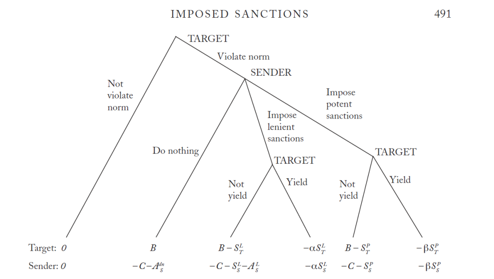

收录于合集 #《国际关系前沿》2022年第2期 8个

作品简介 ****
作者： Jon Hovi，奥斯陆大学政治科学系教授。他的主要研究方向为经济制裁和国际条约，近年的研究著作则集中在气候变化议题上。著作包括《通往新的气候协定：冲突、解决与管理》（2014）等。
编译： 郑敖天（国政学人编译员，佩伯代因大学公共政策学院）
来源： World Politics 57(04):479 – 499 DOI:10.1353/wp.2006.0011
《国际政治》，2006年冬刊，总第57卷。
归档： 《国际关系前沿》2022年第2期，总第41期。
导读
本文是一篇旨在解释影响经济制裁的决定性因素的综合分析文章，发表于2006年。本文中，作者综合使用的定性与定量研究方法，剖析了决定经济制裁成败的决定性因素。作者认为，判断经济制裁是否成功的标准是：被制裁方是否 选择 服从制裁方提出的要求。在这种情况下，制裁方必须保证自身对被制裁方具有信息上的优势，以保证被制裁方难以判定经济制裁带来的影响与制裁方贯彻制裁政策的意志，从而使经济制裁成功的几率大大提高。
在国际关系中，经济制裁是一种典型的进攻型外交手段，常见于大国对小国使用，强国对弱国使用，发达国家对发展中国家使用。在本文中，作者借助博弈论的研究模型，系统地讨论了经济制裁的适用环境和成功条件，并展现了制裁国和被制裁国双方的互动关系。作者在文中着重强调了“信息”在经济制裁中的重要地位，并认为当被制裁方因缺乏信息，而对制裁方的决心和经济制裁的冲击出现误判时，经济制裁更有可能达到其设计的目的。与此同时，制裁方和被制裁方在经济关系上的地位也是影响经济制裁效果的主要因素。
摘要
作为一种惩罚性的外交手段，经济制裁是否有效？何时有效？这是多年来国际关系学者们一直希望解答的问题。一些学者认为，经济制裁只有作为一种“恫吓”手段时才是有效的，但也有经济制裁在实施后才产生效果的例子。作者认为，只有在被制裁者低估了经济制裁的影响以及制裁者的决心时，经济制裁才能让被制裁方屈服。其次，制裁必须有力到足以“纠正”被制裁者对制裁的低估。在本文中，作者使用不完整信息的博弈论模型来发展和阐明自己的论点，并确定了导致经济制裁成功的因素。
编译
01
决定经济制裁成败的因素
作为一种外交惩戒手段，经济制裁具有极大的不确定性。制裁方很难确定经济制裁能真正打到被制裁方的“痛点”。而随着经济全球化的深化，被制裁方应对经济制裁的选择也越来越多。很多被制裁国家可以简单地通过改变产品或资源供应方的方式来规避经济制裁的冲击。与此同时，经济制裁往往也会让制裁方付出经济代价。
作者因此指出，由于经济制裁本身的局限性，经济制裁的目标也应该尽量集中在具体的议题上，如从争议地区撤军等。在这种情况下，被制裁方会更倾向于在特定议题上做出让步。同时，作者也强调，制裁者应在制裁的经济领域拥有较强的掌控力甚至是垄断地位，从而使制裁者除了向制裁方妥协以外 别无选择 。作者以第一次海湾战争后美国对伊拉克的经济制裁为例，认为战后国际原子能机构没能在伊拉克找到大规模杀伤性武器的结果，证明该经济制裁达到了预期的目的。而对于伊拉克来讲，西方国家对其施加的经济制裁，使其无法获得维持经济社会运转的许多基础性资源。这是导致伊拉克选择向西方国家妥协的重要因素。
作者同时也总结了导致经济制裁失败的三个主要条件。1.当制裁方缺乏贯彻经济制裁的意志，并被被制裁方发现时；2.当经济制裁的力度无法对被制裁方的经济产生足以使其让步的破坏时；3.当被制裁方认为，无论自己做出什么样的让步，经济制裁都无法被避免时。
基于以上讨论，作者认为，如果经济制裁行动想要成功，制裁方必须要保证在信息和经济实力上相对于被制裁方拥有优势。在这种情况下，被制裁方要么会因为恐惧制裁的后果而在制裁前选择妥协。估计制裁的影响而选择在制裁发生前妥协，要么会因低估制裁的影响，而在制裁发生后迫于其压力而妥协。
作者举出了1933年英苏纠纷的例子。1932年，英国单方面取消了英苏贸易协定。苏联随后以间谍和贿赂罪拘禁了6名在苏联活动的英国公民。英国随后警告苏联，若不释放这六名英国人，便将对苏联实施禁运。苏联对此视若罔闻，并于1933年4月将6人中的4人判刑。判决结果出台仅一周后，英国便对苏联展开了禁运。尽管苏联一开始对英国的经济制裁采取了反制措施，但在禁运实施2个月后，苏联便主动与英国展开了协商，并最终释放了6名英国人。根据苏联的快速反应，作者认为，这证明苏联未能预料到英国经济制裁对苏联经济造成的影响，以及英国贯彻经济制裁的国家意志。在这一背景下，英国“出人意料”的经济制裁最终导致一开始表现强硬的苏联在被制裁后反而急于重启与英国的对话。
作者同时表示，经济制裁有时也能通过间接的方式使被制裁方妥协。作者以1965年英国对制裁罗德西亚的制裁为例，强调了经济制裁在国际关系中具有强烈的“信号”作用。虽然罗德西亚在制裁前已经做好了承受经济冲击的准备，但随着英联邦国家纷纷跟随英国，罗德西亚逐渐失去了国际支持，尤其是失去了来自南非的经济与军事支援。这证明在一些情况下，经济制裁的效果和威慑，往往会在经济制裁实施一段时间后才会逐渐显现。这也增大了被制裁方在面临制裁时做出误判的可能性。
如果被制裁方认为，无论自己做出什么样的让步，经济制裁都无法被避免时，制裁方应当如何行动呢？作者举出1992年联合国通过的对利比亚进行制裁的731和748号决议作为例子。在该案例中，美国最初威胁利比亚如果不对两名涉嫌策划1988年洛克比空难的嫌疑人进行引渡，则会对利比亚展开经济制裁。当时的利比亚卡扎菲政权认为，美国的目的是彻底颠覆其政权，因此拒绝了引渡申请。在这种情况下，美国改变策略，开始与联合国主要成员国沟通，并最终说服安理会集体同意向卡扎菲政权施加经济制裁。这一策略最终让卡扎菲政权意识到，美国经济制裁的目标是有限的。在意识到其可以通过在特定议题上的让步避免经济制裁后，卡扎菲政权最终同意将两名嫌疑人引渡至中立国荷兰进行审判
在本案例中，美国通过联合国平台，让卡扎菲政权认识到其可以通过做出适当的让步，来避免经济制裁造成的损失。这证明制裁者和被制裁者之间的“有效互动”，也是决定经济制裁成败的重要因素。
02
经济制裁的博弈论模型
为了进一步阐明自己在经济制裁上的观点，作者设计了一个博弈论模型。在该模型中有两个行为体，分别为制裁国（Sender）和制裁目标国（Target）。制裁目标国想要违反制裁国希望其尊重的国际规范，而在博弈开始前，制裁国威胁，如果制裁目标国违反该规范，将实施制裁。
如果制裁目标国没有违反规范，那么制裁国就别无选择，游戏结束。如果制裁目标国违反规范，制裁国必须在三个选项之间做出选择——实施“强有力的”（Lenient）制裁，实施“从宽”(Potent)制裁，或“不实施任何制裁”。同时，本文做出以下假设：（1）制裁目标国能够观察制裁国的举动，以及 （2） 如果 制裁国实施“宽松”制裁，制裁目标准备坚定⽴场，但如果 制裁国实施“有力”制裁，制裁目标宁愿让步。如果发件⼈选择什么都不做，则游戏结束。如果制裁实施强硬或从宽的制裁，制裁目标必须选择是否让步。
在博弈成本上，作者假设双方都会为经济制裁付出代价,并从遵守规则/破坏规则中获得利益。其表示方式如下：
制裁目标国 获得的违规收益为B >0，制裁国违规后仍不让步的代价为C>0
__
在制裁力度为“从宽”，且制裁目标国不屈服(Not Yield)时，制裁目标国付出的代价为Slt,制裁国付出的代价为Sls。若制裁目标屈服(Yield)，制裁目标国付出代价则为αSlt(0 < α < 1).，制裁国付出的代价为αSls (0 < α < 1).
__
在制裁力度为“强有力”，且制裁目标国不屈服时，制裁目标国付出的代价为Spt,制裁国付出的代价为Sps。若制裁目标国屈服，制裁目标国付出代价则为βSpt(0 < β < 1)，制裁国付出的代价则为βSps(0 < β < 1)。
__
本文假设，制裁目标国偏向“从宽”的经济制裁，但也准备好迎接“强有力”的经济制裁，则可知(1– β)Spt > B > Slt > (1 – α)Slt .
__
本文同时假设，制裁国选择是否制裁的决定，会在其国内形成一定的“舆论成本”。如果制裁国选择进行“从宽”的制裁，则舆论成本为Als。如果制裁国选择不进行制裁，则舆论成本为A dn;s。A dn;s >Als>0
根据以上假设，作者设计了以下博弈图：

图一：作者设计的博弈图
作者随后设定了两个博弈论情境，分别为：（1）完全信息（Complete information）（2）不完全信息（Incomplete information）。经过博弈论分析后，作者得出以下结论：
1. 完整信息的情况下实施制裁是行不通的。相反，只有在信息不完整的情况下，实施制裁才会导致目标屈服。
2. 制裁国实施宽松制裁的概率 （q）越⼤，制裁国实施有效制裁 （p） 的概率就越⼩。
3. 即使制裁成功，实施制裁也会产⽣次优结果。
4. 在博弈中，制裁目标国必须考虑到违反规范不太可能导致制裁国实施强有力的制裁。同时，制裁国若希望制裁有效，则必须准备实施强有力的制裁。
03
结论
根据以上分析，作者认为在实施经济制裁的过程中，制裁国可能故意误导被制裁国，使其在对制裁国实施制裁的决⼼或制裁的效力上出现误判。 对制裁国来讲，这一策略将有效提高实施达到制裁目的的可能性。尽管如此，作者认为以上策略也有缺陷。假设制裁国计划实施强有力的制裁，但欺骗目标相信制裁只会从宽。这显然会使被制裁国在实施制裁后更有可能让步。但与此同时，被制裁国变得更有可能首先违反规范。由于制裁对双方来说代价高昂，制裁国往往倾向于鼓励被制裁国遵守规范，而不是违反规范，再在遭受制裁后屈服。
作者同时认为，在讨论经济制裁时，学者和政策制定者们了解并分清经济制裁实施的时机。在一些情况下，经济制裁只应作为一种恫吓策略。而在另一些情况下，经济制裁只有在实施之后才能体现出效果。如果制裁者希望经济制裁在实施后能够促使被制裁者做出妥协，那么该制裁就必须满足一下两个条件：1.被制裁国必须误判制裁国贯彻经济制裁的决心，并低估经济制裁的冲击。2.被制裁国的误判必须被严厉的经济制裁所纠正。
词汇整理
非个案 Non-cases
次优的 Suboptimal
宽松的 Lenient
罗德西亚共和国
（1965年-1979年在今津巴布韦境内存在的一个国家，因其种族立场未受多数国家承认）
Rhodesia
审校 | 程朵依 李博轩
排版 | 贾希铭 黄伊蕾
文章观点不代表本平台观点，本平台评译分享的文章均出于专业学习之用, 不以任何盈利为目的，内容主要呈现对原文的介绍，原文内容请通过各高校购买的数据库自行下载。

国政学人
支持学术公益与知识传播
微信扫一扫赞赏作者 __赞赏
已喜欢，对作者说句悄悄话
取消 __
发送给作者
发送
最多40字，当前共字
上一页 1/3 下一页
长按二维码向我转账
支持学术公益与知识传播
受苹果公司新规定影响，微信 iOS 版的赞赏功能被关闭，可通过二维码转账支持公众号。